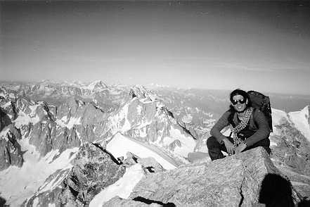

We weren't even half an hour out of the hut
.
'Amos, I've broken my ankle'.
It was as simple as that, up on the Brenva Glacier. And that was the end of the season for Tom, and a premature break for me. Tom's still hobbling around a year later, after the Italians allegedly botched up the complicated operation. So say the British doctors. Where fine incisions were called for, he got brutal gashes - and there are many ugly scars to prove it. Still, he had four days of bliss with the Aostan nurses, leg stuck up high in the air. And the helicopter ride wasn't to be sniffed at, even if he did have to wait (through no fault of mine) a cold six hours wrapped up in everything we had. As I plodded off to get help from somewhere (as fast as I could, you understand) he did look a grim sight, one boot flopping out the end of a sleeping bag at right angles to his leg.
That was just the end. Full of optimism four of us had bundled out of Tom's car at Bondo. The Alps were awash, dovunque. With forecasts bad for at least two weeks, Tom (Bridgeland this time, not Percival) was in no mood for hanging around.
'I know a beautiful spot for climbing, a couple of hours away on the Italian coast'.
A whole day's driving later. Sun, sea, sand, limestone and bikinis: Finale Ligure. Rolls off the tongue like its ice cream. Happiness, though, is ephemeral. Late one night, tired, driving along, hot and sticky. Rounding a bend, the front of the car dips dramatically and we come to a violent and screeching stop. 'This car ain't goin no place else'.
More words would have been superfluous. One front wheel lay detached from the car, dripping with fluids. The asphalt sported a huge long gash. And spectators were gathered all around. Money can do many things and miraculously, our car does not retire on the Med. It still has a week of active life left in the ancient structure. Enough to get us to Chamonix. Tant pis pour Tom.
But I love the Alps. Winter time, learning to ski. There's nothing more fun. It's New Year's Day and balancing on planks has become a joke. Look, a big bowl where we can jump and fly. Such grace and elegance in the air. A different picture on the ground, collapsed in hysterics. The best afternoon, till one too many uncontrolled landings. A ski can do a lot of damage to a knee. This time it's me condemned to the valley. Later, Dave in his swanking sallopettes stands outside the Argentiere refuge. A little slip and he discovers the short cut to the glacier. Shame - they were good salopettes. Martin used to like short cuts as well. We shout:
'You know, where you're skiing right now. Have you seen it in summer? Crevasses, lots of them!'
It doesn't take long. Straight into one he goes. Twice, losing his poles and giving the most pathetic whimper. It's hilarious, though that's not shown on his ashen face. Things don't always work out, whatever's written in this journal. Yea, this year's been particularly good for me.

Amos on the summit of Mont Blanc du Tacul
Photo: Amos Preminger